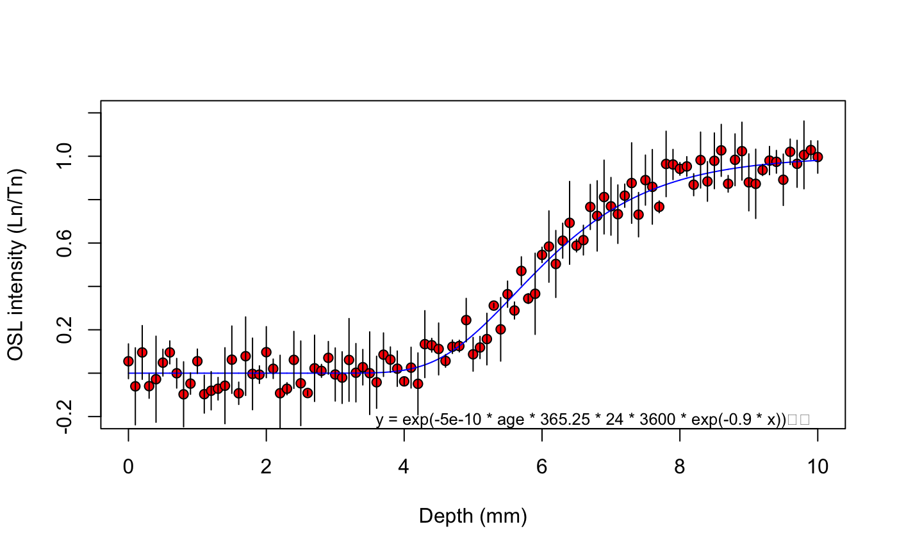
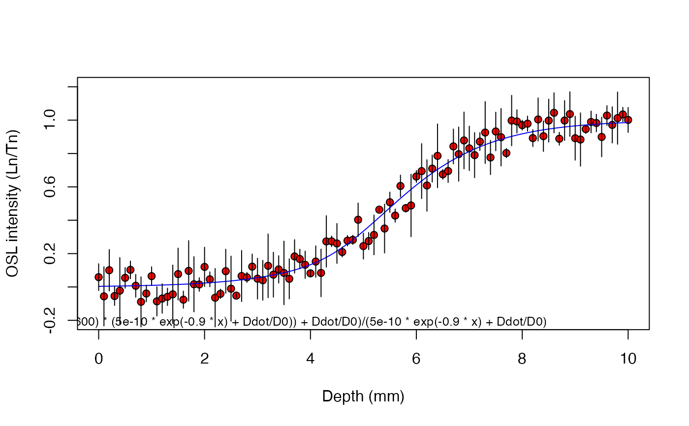
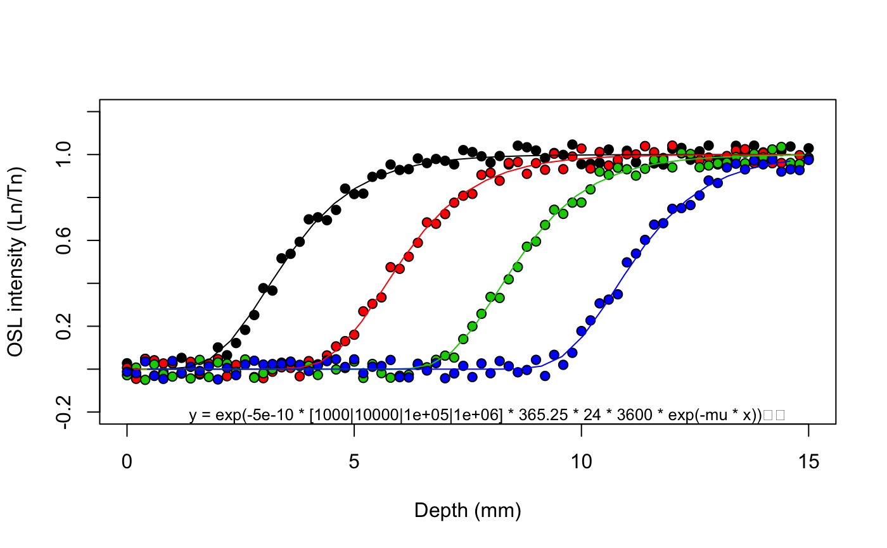
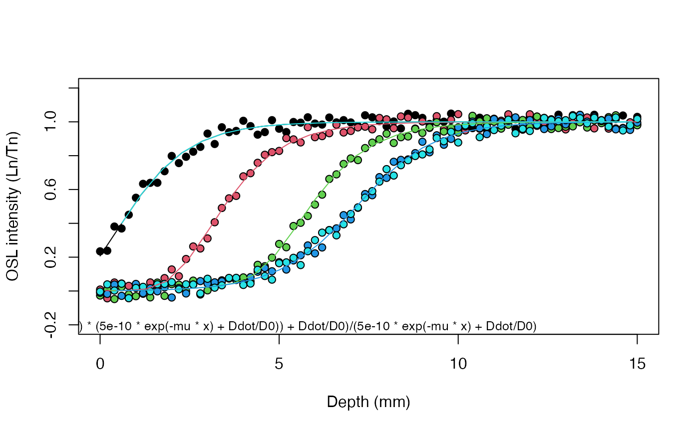

R/fit_SurfaceExposure.R
fit_SurfaceExposure.RdThis function determines the (weighted) least-squares estimates of the parameters of either equation 1 in Sohbati et al. (2012a) or equation 12 in Sohbati et al. (2012b) for a given OSL surface exposure data set (BETA).
fit_SurfaceExposure( data, sigmaphi = NULL, mu = NULL, age = NULL, Ddot = NULL, D0 = NULL, weights = FALSE, plot = TRUE, legend = TRUE, error_bars = TRUE, coord_flip = FALSE, ... )
| data | data.frame or list (required): Measured OSL surface exposure data with the following structure: (optional)
| depth (a.u.)| intensity | error |
| [ ,1] | [ ,2] | [ ,3] |
|-------------|-----------|-------|
[1, ]| ~~~~ | ~~~~ | ~~~~ |
[2, ]| ~~~~ | ~~~~ | ~~~~ |
... | ... | ... | ... |
[x, ]| ~~~~ | ~~~~ | ~~~~ |
Alternatively, a list of |
|---|---|
| sigmaphi | numeric (optional):
A numeric value for |
| mu | numeric (optional):
A numeric value for mu, i.e. the light attenuation coefficient.
Example: |
| age | numeric (optional):
The age (a) of the sample, if known. If |
| Ddot | numeric (optional):
A numeric value for the environmental dose rate (Gy/ka). For this argument
to be considered a value for |
| D0 | numeric (optional):
A numeric value for the characteristic saturation dose (Gy). For this argument
to be considered a value for |
| weights | logical (optional):
If |
| plot | logical (optional): Show or hide the plot. |
| legend | logical (optional): Show or hide the equation inside the plot. |
| error_bars | logical (optional): Show or hide error bars (only applies if errors were provided). |
| coord_flip | logical (optional): Flip the coordinate system. |
| ... | Further parameters passed to plot. Custom parameters include: |
Function returns results numerically and graphically:
-----------------------------------
[ NUMERICAL OUTPUT ]
-----------------------------------
RLum.Results-object
slot: @data
| Element | Type | Description |
$summary | data.frame | summary of the fitting results |
$data | data.frame | the original input data |
$fit | nls | the fitting object produced by minpack.lm::nlsLM |
$args | character | arguments of the call |
$call | call | the original function call |
slot: @info
Currently unused.
------------------------
[ PLOT OUTPUT ]
------------------------
A scatter plot of the provided depth-intensity OSL surface exposure data with the fitted model.
Weighted fitting
If weights = TRUE the function will use the inverse square of the error (\(1/\sigma^2\))
as weights during fitting using minpack.lm::nlsLM. Naturally, for this to
take effect individual errors must be provided in the third column of the
data.frame for data. Weighted fitting is not supported if data
is a list of multiple data.frames, i.e., it is not available for global
fitting.
Dose rate
If any of the arguments Ddot or D0 is at its default value (NULL),
this function will fit equation 1 in Sohbati et al. (2012a) to the data. If
the effect of dose rate (i.e., signal saturation) needs to be considered,
numeric values for the dose rate (Ddot) (in Gy/ka) and the characteristic
saturation dose (D0) (in Gy) must be provided. The function will then fit
equation 12 in Sohbati et al. (2012b) to the data.
NOTE: Currently, this function does not consider the variability
of the dose rate with sample depth (x)! In the original equation the dose
rate D is an arbitrary function of x (term D(x)), but here D is assumed
constant.
Global fitting
If data is list of multiple data.frames, each representing a separate
sample, the function automatically performs a global fit to the data. This
may be useful to better constrain the parameters sigmaphi or mu and
requires that known ages for each sample is provided
(e.g., age = c(100, 1000) if data is a list with two samples).
This function has BETA status. If possible, results should be cross-checked.
0.1.0
Burow, C., 2021. fit_SurfaceExposure(): Nonlinear Least Squares Fit for OSL surface exposure data. Function version 0.1.0. In: Kreutzer, S., Burow, C., Dietze, M., Fuchs, M.C., Schmidt, C., Fischer, M., Friedrich, J., Mercier, N., Philippe, A., Riedesel, S., Autzen, M., Mittelstrass, D., Gray, H.J., 2021. Luminescence: Comprehensive Luminescence Dating Data Analysis. R package version 0.9.14. https://CRAN.R-project.org/package=Luminescence
Sohbati, R., Murray, A.S., Chapot, M.S., Jain, M., Pederson, J., 2012a. Optically stimulated luminescence (OSL) as a chronometer for surface exposure dating. Journal of Geophysical Research 117, B09202. doi: 10.1029/2012JB009383
Sohbati, R., Jain, M., Murray, A.S., 2012b. Surface exposure dating of non-terrestrial bodies using optically stimulated luminescence: A new method. Icarus 221, 160-166.
Christoph Burow, University of Cologne (Germany) , RLum Developer Team
## Load example data data("ExampleData.SurfaceExposure") ## Example 1 - Single sample # Known parameters: 10000 a, mu = 0.9, sigmaphi = 5e-10 sample_1 <- ExampleData.SurfaceExposure$sample_1 head(sample_1)#> depth intensity error #> 1 0.0 0.05487370 0.08018774 #> 2 0.1 -0.06055516 0.17745452 #> 3 0.2 0.09560277 0.12385804 #> 4 0.3 -0.05973453 0.05593426 #> 5 0.4 -0.02775111 0.19830218 #> 6 0.5 0.04852239 0.06168570results <- fit_SurfaceExposure(sample_1, mu = 0.9, sigmaphi = 5e-10)#> #> [fit_SurfaceExposure()] #> #> Estimated paramater(s): #> ----------------------- #> age (a): 9890 ± 369 #> #> Fixed parameters(s): #> -------------------- #> sigmaphi: 5e-10 #> mu: 0.9 #>#> age age_error sigmaphi sigmaphi_error mu mu_error #> 1 9892.724 369.0066 5e-10 NA 0.9 NA## Example 2 - Single sample and considering dose rate # Known parameters: 10000 a, mu = 0.9, sigmaphi = 5e-10, # dose rate = 2.5 Gy/ka, D0 = 40 Gy sample_2 <- ExampleData.SurfaceExposure$sample_2 head(sample_2)#> depth intensity error #> 1 0.0 0.05881908 0.08018774 #> 2 0.1 -0.05623983 0.17745452 #> 3 0.2 0.10032258 0.12385804 #> 4 0.3 -0.05457253 0.05593426 #> 5 0.4 -0.02210573 0.19830218 #> 6 0.5 0.05469614 0.06168570results <- fit_SurfaceExposure(sample_2, mu = 0.9, sigmaphi = 5e-10, Ddot = 2.5, D0 = 40)#> #> [fit_SurfaceExposure()] #> #> Estimated paramater(s): #> ----------------------- #> age (a): 9800 ± 675 #> #> Fixed parameters(s): #> -------------------- #> sigmaphi: 5e-10 #> mu: 0.9 #>#> age age_error sigmaphi sigmaphi_error mu mu_error #> 1 9803.492 674.8362 5e-10 NA 0.9 NA## Example 3 - Multiple samples (global fit) to better constrain 'mu' # Known parameters: ages = 1e3, 1e4, 1e5, 1e6 a, mu = 0.9, sigmaphi = 5e-10 set_1 <- ExampleData.SurfaceExposure$set_1 str(set_1, max.level = 2)#> List of 4 #> $ :'data.frame': 76 obs. of 2 variables: #> ..$ depth : num [1:76] 0 0.2 0.4 0.6 0.8 1 1.2 1.4 1.6 1.8 ... #> ..$ intensity: num [1:76] 0.0274 -0.0303 0.0478 -0.0298 -0.0134 ... #> $ :'data.frame': 76 obs. of 2 variables: #> ..$ depth : num [1:76] 0 0.2 0.4 0.6 0.8 1 1.2 1.4 1.6 1.8 ... #> ..$ intensity: num [1:76] 0.00714 -0.04511 0.04804 0.04145 0.0266 ... #> $ :'data.frame': 76 obs. of 2 variables: #> ..$ depth : num [1:76] 0 0.2 0.4 0.6 0.8 1 1.2 1.4 1.6 1.8 ... #> ..$ intensity: num [1:76] -0.0284 0.00732 -0.04984 0.02182 -0.02349 ... #> $ :'data.frame': 76 obs. of 2 variables: #> ..$ depth : num [1:76] 0 0.2 0.4 0.6 0.8 1 1.2 1.4 1.6 1.8 ... #> ..$ intensity: num [1:76] -0.0122 -0.0189 0.0358 -0.0314 -0.0454 ...#> #> [fit_SurfaceExposure()] #> #> Shared estimated paramater(s): #> ----------------------- #> mu: 0.901 ± 0.00161 #> #> Fixed parameters(s): #> -------------------- #> age (a): 1000, 10000, 1e+05, 1e+06 #> sigmaphi: 5e-10 #>#> #> #> #>#> age age_error sigmaphi sigmaphi_error mu mu_error #> 1 1e+03 NA 5e-10 NA 0.9009518 0.001612271 #> 2 1e+04 NA 5e-10 NA 0.9009518 0.001612271 #> 3 1e+05 NA 5e-10 NA 0.9009518 0.001612271 #> 4 1e+06 NA 5e-10 NA 0.9009518 0.001612271## Example 4 - Multiple samples (global fit) and considering dose rate # Known parameters: ages = 1e2, 1e3, 1e4, 1e5, 1e6 a, mu = 0.9, sigmaphi = 5e-10, # dose rate = 1.0 Ga/ka, D0 = 40 Gy set_2 <- ExampleData.SurfaceExposure$set_2 str(set_2, max.level = 2)#> List of 5 #> $ :'data.frame': 76 obs. of 2 variables: #> ..$ depth : num [1:76] 0 0.2 0.4 0.6 0.8 1 1.2 1.4 1.6 1.8 ... #> ..$ intensity: num [1:76] 0.235 0.238 0.381 0.369 0.451 ... #> $ :'data.frame': 76 obs. of 2 variables: #> ..$ depth : num [1:76] 0 0.2 0.4 0.6 0.8 1 1.2 1.4 1.6 1.8 ... #> ..$ intensity: num [1:76] 0.00872 -0.04321 0.05032 0.04426 0.03029 ... #> $ :'data.frame': 76 obs. of 2 variables: #> ..$ depth : num [1:76] 0 0.2 0.4 0.6 0.8 1 1.2 1.4 1.6 1.8 ... #> ..$ intensity: num [1:76] -0.02682 0.00921 -0.04757 0.02453 -0.02024 ... #> $ :'data.frame': 76 obs. of 2 variables: #> ..$ depth : num [1:76] 0 0.2 0.4 0.6 0.8 1 1.2 1.4 1.6 1.8 ... #> ..$ intensity: num [1:76] -0.0106 -0.0171 0.0381 -0.0287 -0.0422 ... #> $ :'data.frame': 76 obs. of 2 variables: #> ..$ depth : num [1:76] 0 0.2 0.4 0.6 0.8 1 1.2 1.4 1.6 1.8 ... #> ..$ intensity: num [1:76] -0.00358 0.03918 0.00275 0.04301 -0.04237 ...results <- fit_SurfaceExposure(set_2, age = c(1e2, 1e3, 1e4, 1e5, 1e6), sigmaphi = 5e-10, Ddot = 1, D0 = 40)#> #> [fit_SurfaceExposure()] #> #> Shared estimated paramater(s): #> ----------------------- #> mu: 0.899 ± 0.00232 #> #> Fixed parameters(s): #> -------------------- #> age (a): 100, 1000, 10000, 1e+05, 1e+06 #> sigmaphi: 5e-10 #>#> #> #> #>#> age age_error sigmaphi sigmaphi_error mu mu_error #> 1 1e+02 NA 5e-10 NA 0.898662 0.002323752 #> 2 1e+03 NA 5e-10 NA 0.898662 0.002323752 #> 3 1e+04 NA 5e-10 NA 0.898662 0.002323752 #> 4 1e+05 NA 5e-10 NA 0.898662 0.002323752 #> 5 1e+06 NA 5e-10 NA 0.898662 0.002323752